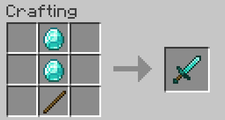

A sword is a melee weapon that is mainly used to damage entities and for cutting cobwebs or bamboo (resulting in twice the normal damage being taken). A sword is made from one of six materials, in order of increasing quality and expense: wood, gold, stone, iron, diamond and netherite. This recipe will focus on the diamond variant.
The diamond sword is the second best sword in the game. It is very iconic in the minecraft community as it used to be one of the most saught out items in the game.

Back to Recipes